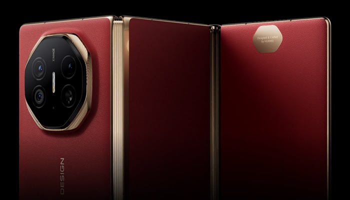

Overview
Huawei Mate XT Ultimate Design is the world's first commercial tri-fold smartphone, redefining mobile design and multitasking. It offers a seamless fusion of smartphone portability and tablet productivity. Packed with flagship hardware, a groundbreaking foldable display, and Huawei’s latest innovations, the Mate XT stands as a premium showcase of what the future of mobile technology looks like.